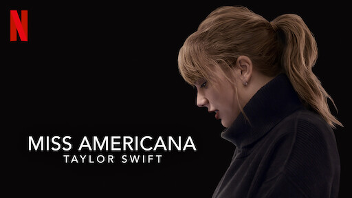

Miss americana
Es una película documental, dirigida por Lana Wilson, que sigue la vida de la cantante estadounidense Taylor Swift a lo largo de varios años de su carrera.
La película debutó en la noche inaugural del Festival de Cine de Sundance 2020 el 23 de enero de 2020, y se estrenó en Netflix y en cines seleccionados el 31 de enero de 2020.

Netflix describió la película como «cruda y emocionalmente una mirada reveladora "a Swift" durante un período de transformación en su vida mientras aprende a aceptar su papel no solo como compositora e intérprete, sino como una mujer que aprovecha todo el poder de su voz. Después de su lanzamiento, se convirtió en la película documental biográfica original de Netflix mejor valorada por un artista en la historia